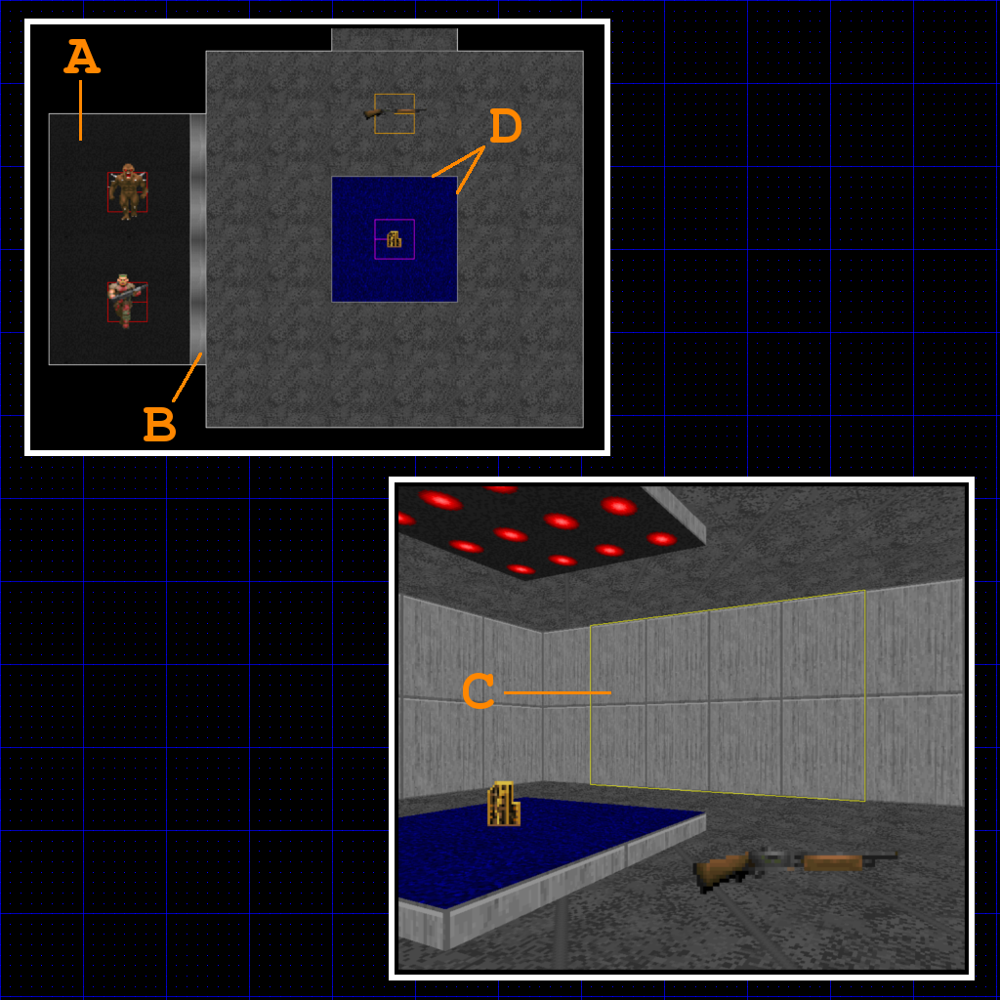
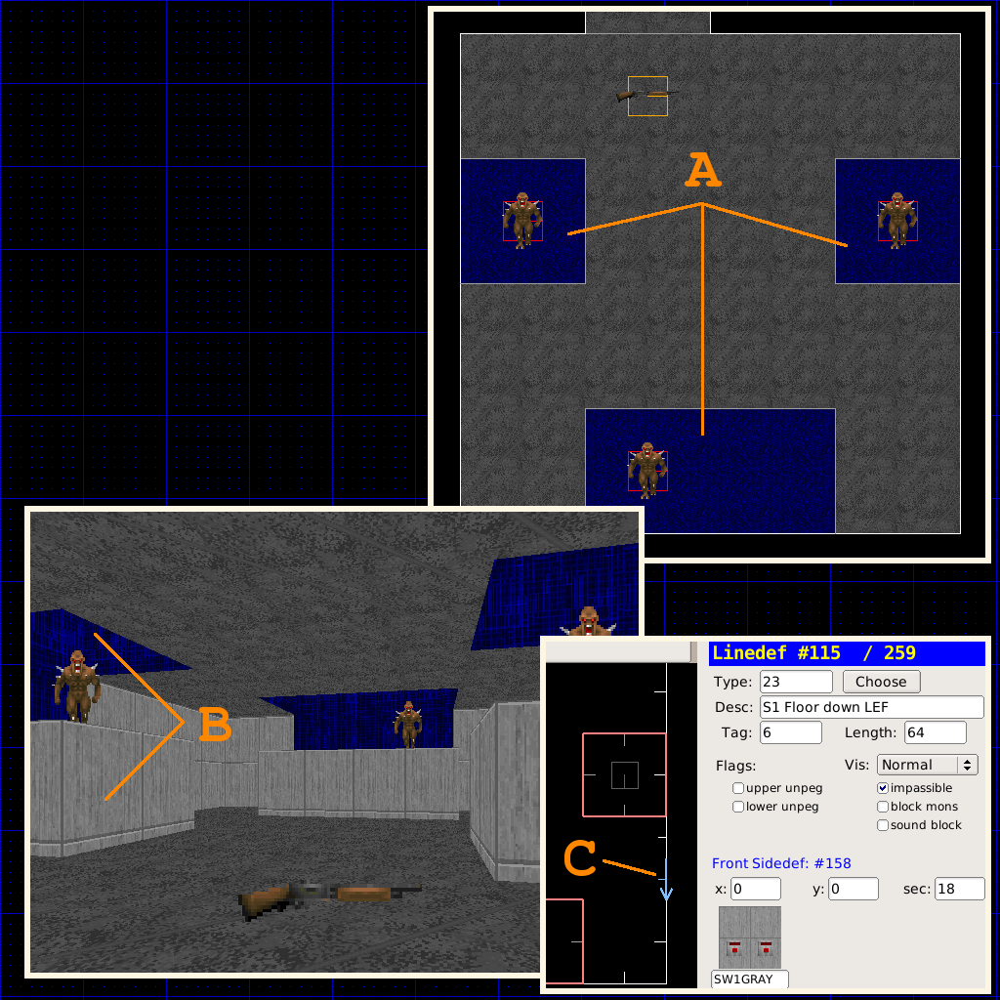
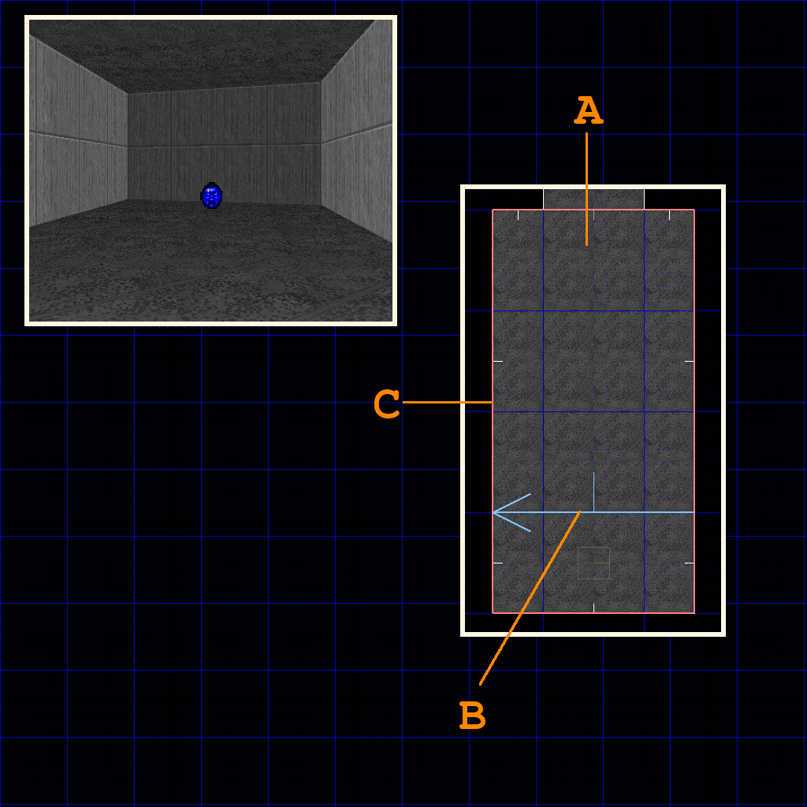
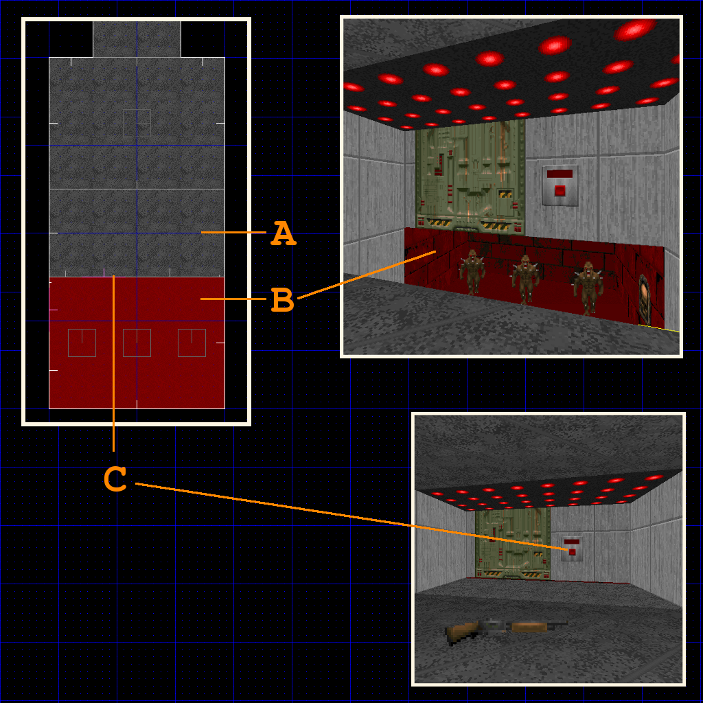
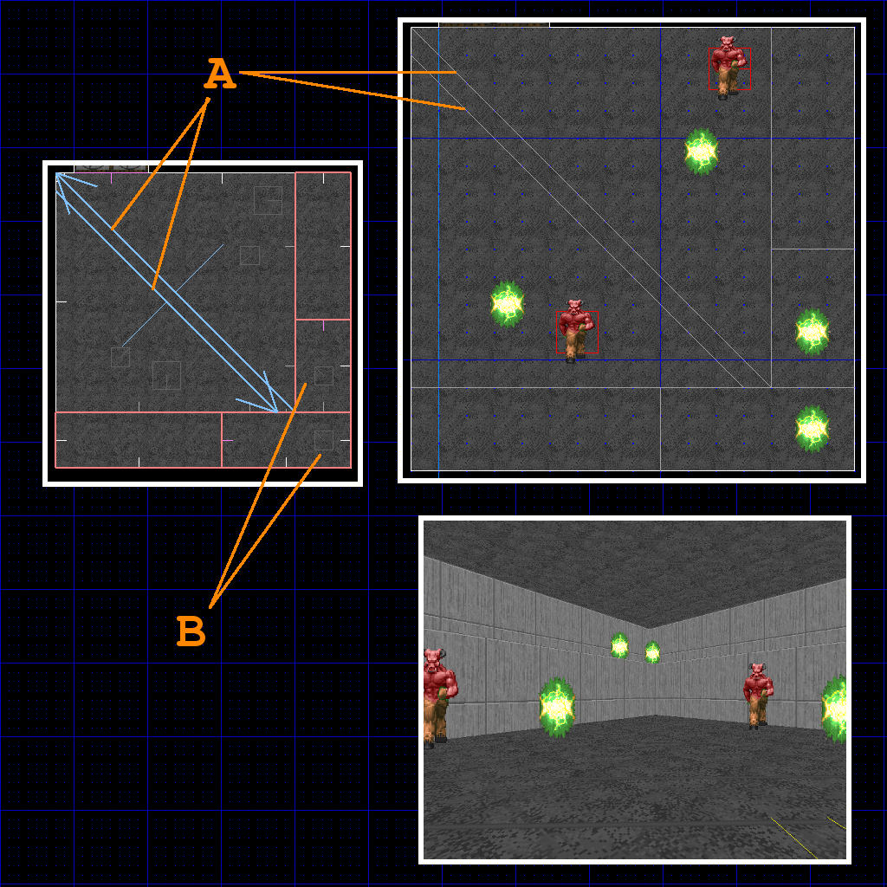

back to the Index | go to next page
Traps
Examples
All trap examples can be played in traps.wad
Monster Closet
Monsters are staged in a hidden room with a door disguised as a wall or other nondescript panel, which opens to surprise the player.

- Create a hidden closet sector (A), add some monsters inside it.
- Create a closet door sector (B).
- Close the closet door so that it looks like a normal wall (C).
- Apply a fresh tag to the closet door sector (B).
- Add the trigger lines that will open the closet, and apply the same tag on them (D).
- Assign the linedef special Type 109 W1 Open and stay fast to the trigger lines (D).
Monster Platform
Monsters are staged on top a platform that lowers from the ceiling to surprise the player.

- Add the platform sectors with some monsters in them (A).
- Raise the platform floors and ceilings (B) until flush with the surrouning ceiling.
- Select the platform sectors and apply a fresh tag (A).
- Insert vertices along a wall to make a 64 unit long line, for the switch (C).
- Set a switch texture (C).
- Apply the platform tags to the switch linedef (C).
- Set the switch linedef (C) type to 23 S1 Floor down LEF.
Crushers
The ceiling lowers to crush the player.

- Assign a fresh tag to the sector that will do the crushing (A).
- Create a linedef that will act as the walk-over trigger (B).
- Assign the same tag to the trigger linedef (B).
- Set the trigger linedef (B) Type 6 W1 Crusher /fast
|
Note:
You will need to lower unpeg the room sector walls (C) if you do not want the walls to move up and down with the crushing ceiling.
|
|
Warning:
Fast crushers do less damage and the player may even survive one round of crushing. Slow crushers take their time, dealing a lot of damage and ensures player death.
|
Drop Trap
The floor drops out unexpectly from beneath the player into a room with monsters.

- Add the sector that will drop out beneath the player (A).
- Tag the sector (A).
- Add the hidden room the player will drop into, lower it's floor (B).
- Insert vertices on a wall to create a switch (C).
- Set the tag of the switch linedef (C) to match the drop sector (A).
- Set the switch linedef Type 123 SR Lift Lower /fast (C).
Lock-In Trap
Lock all the exits in a room, forcing the player into close combat for a short time.
- Create the open door sector (A) and assign a fresh tag to it.
- Add the linedef that will trigger the door to close (B).
- Set the linedef Type 16 W1 Close for 30s
|
Note:
If you want to close multiple doors in the room, give them all the same tag.
|
Teleport Ambush
Monsters stationed in a hidden room wake up to the sound of gunfire, walk over a teleport trigger and summon themselves to the designated location.
- Apply a fresh tag to the sector where the monsters will teleport into (A).
- Insert the Teleport exit thing (type 14, under the "Player" category called TFOG) in the sector (A).
- Create a hidden room where the monsters are stationed (D).
- Connect the main sector (A) with the hidden room (D) via a sound pipe (B). This allows the sound of gunfire to reach the hidden room, alerting the monsters.
- Insert a teleport trigger linedef in the hidden room (C), assign the same tag as the exit sector (A), and set the Type 97 WR Teleport.
|
Note:
Use the Sound Sector Rendering mode (under the View menu), and enter sector edit mode in the 2D view to see how sound travels in your map.
|
Combat Teleporting
Monsters teleport around the player during combat, making engagements less predictable. This trap is used in Doom II map 10 to great effect with a Cyberdemon.

- Create teleport trigger linedefs of Type 126 WR Teleport /mon (A).
- Apply a fresh tag to the trigger line (A).
- Apply the same tag to a destination sector (B)
- Place a Teleport exit in the destination sector (B).
- Repeat as needed, more teleport triggers with different destinations will make for varied encounters.
Nukage Surprise
A floor turns into radioactive waste, dealing damage to the player when walked on.
- Add a trigger line of Type 37 W1 Floor down LEF /NXP (A).
- Apply a fresh tag to the trigger line (A).
- Tag the target sector (B) the same as the trigger tag.
- The target sector (B) must be surrounded by damage sectors (C).
- The damage sectors (C) are lower than the target sector (B).
- The damage sectors (C) have Type 7 Damage 5% and the NUKAGE1 texture. On trigger the target sector (B) will lower to the damage sectors (C) and the damage and texture is transferred.
back to the Index | go to next page